Bitácora Personal · Órbita 2026
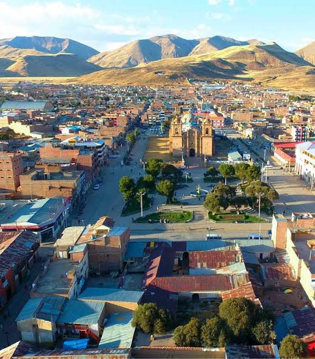


Soy del Perú y actualmente estudio Contabilidad en la
Universidad Católica San Pablo,
en Arequipa.
Nací el 8 de agosto de 2007 en el departamento de Puno, específicamente en
Ayaviri,
una tierra de altura con mucha identidad. Mi familia es pequeña, pero muy unida: está formada por mis padres, Simeón Mamani Limache y Luz Mercedes Ramos Zúñiga, y por mi hermana menor, de 13 años. A pesar de las dificultades y de todo lo que ha tocado vivir, siempre hemos sabido encontrar alegría y apoyo mutuo.
Cursé mi primaria y secundaria en el
colegio privado Corazón de Jesús.
Fue una etapa bonita a su manera, llena de aprendizajes y recuerdos, pero nada se compara con el día en que dejé Puno para iniciar mi vida universitaria en Arequipa. Todo era nuevo para mí: otra ciudad, nuevos caminos y personas distintas. Hoy disfruto mucho esta etapa de crecimiento; de hecho, no me gustaría volver a radicar en Puno y sueño con seguir conociendo y explorando nuevos lugares. Me inspiran profundamente los paisajes abiertos, la naturaleza, los animales y esos momentos de quietud y soledad.


Mi gusto musical se mueve entre la calma y el impulso, combinando el indie, el lo-fi y las atmósferas melancólicas como Mac DeMarco, The Neighbourhood, Vacations, Eyedress, Molina, Mareux, Narvent, DVRST y Navjaxx con la intensidad cambiante de Twenty One Pilots y el ritmo de 4 morat.
Siento una especial predilección por la literatura existencial, psicológica y reflexiva, con autores como Fiódor Dostoyevski, Franz Kafka, Albert Camus, Jean-Paul Sartre, Osamu Dazai, Ernesto Sabato, Emil Cioran, George Orwell y José María Arguedas. Estos son sus libros:
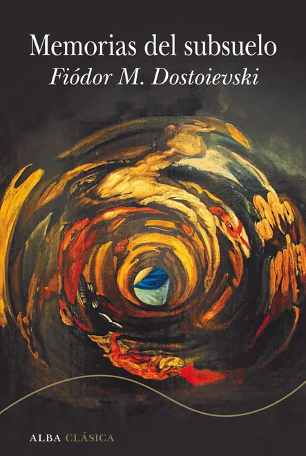
Memorias del subsuelo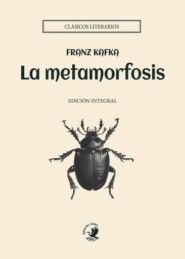
La metamorfosis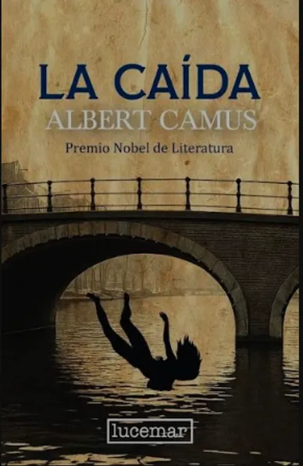
La caída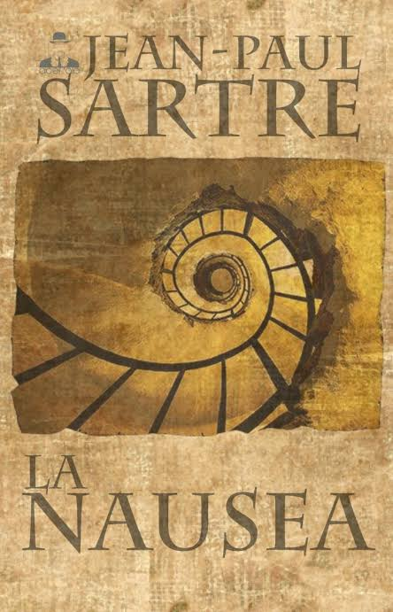
La náusea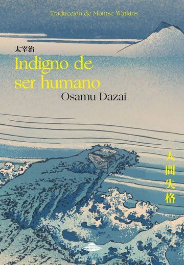
Indigno de ser humano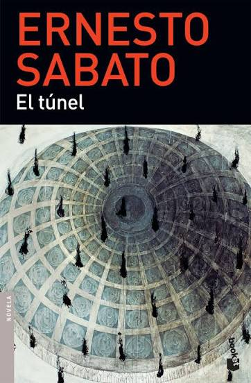
El túnel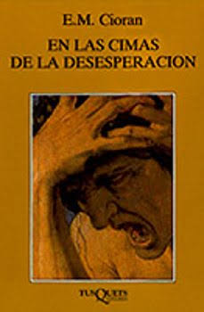
En las cimas de la desesperación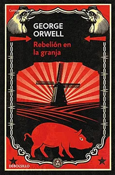
Rebelión en la granja
Actualmente curso el cuarto semestre de Contabilidad en la Universidad Católica San Pablo, en Arequipa. Suelo destacar por mi capacidad de adaptarme casi a cualquier entorno y por el compromiso con lo que se me encomienda, cualidades que me llevaron a obtener el primer puesto en el segundo y tercer semestre de mi promoción. Este año también participé como edecán en el congreso de contadores celebrado en Arequipa, y a lo largo de mi formación he ganado algunos concursos de matemáticas y música.
También tuve la dicha de aprender de mis profesoras de Contabilidad:
Geraldine Farfán,
Giovanna M. García Jarufe y
Lourdes Paz.
En los cursos de Humanidades, con profesores como
Pablo Núñez Saija y
Alejandro Estenos.
En cursos de números, con docentes como
Maribel Marianela,
Luisa Urure Tejada y
Ricardo Enríquez Cáceres.
Y un curso que cambió mi forma de pensar fue Introducción al Pensamiento Computacional con el profesor
Ernesto Cuadros Vargas.
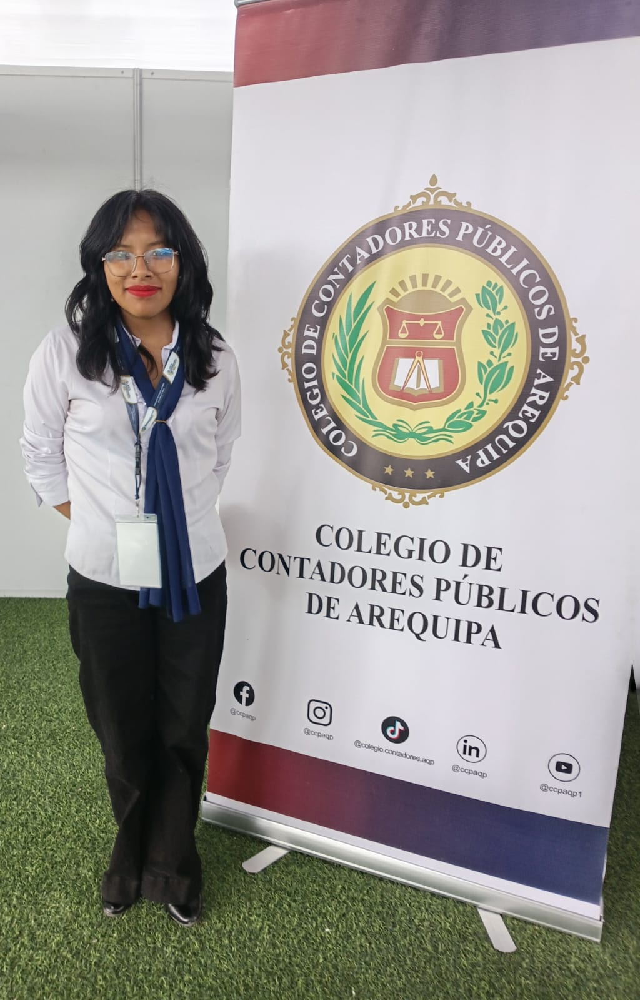
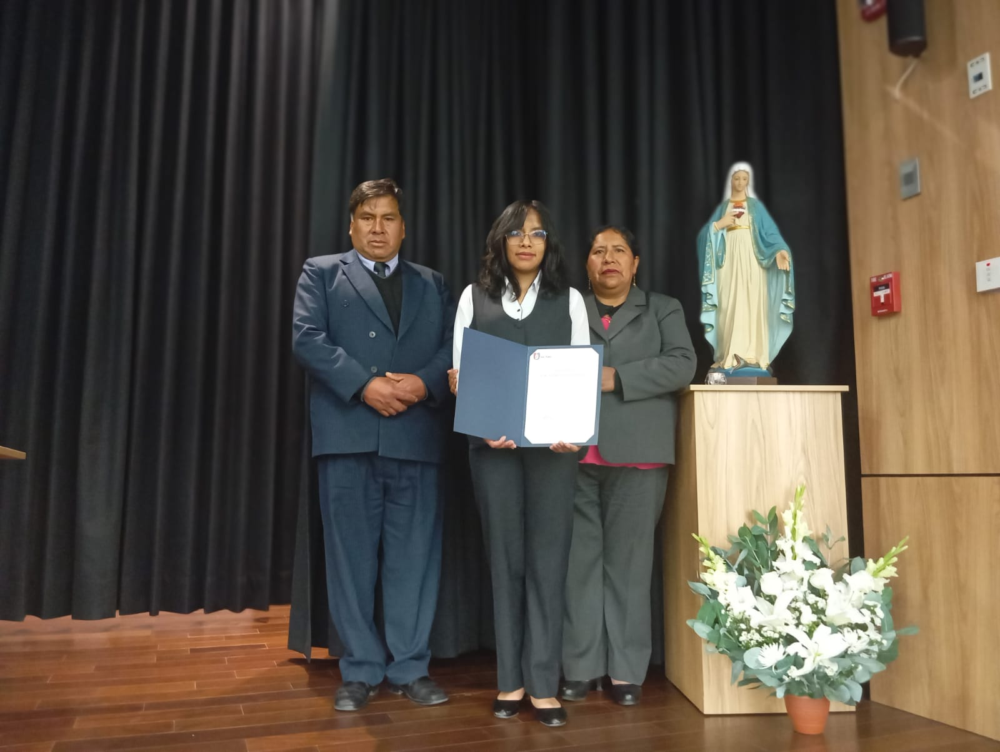
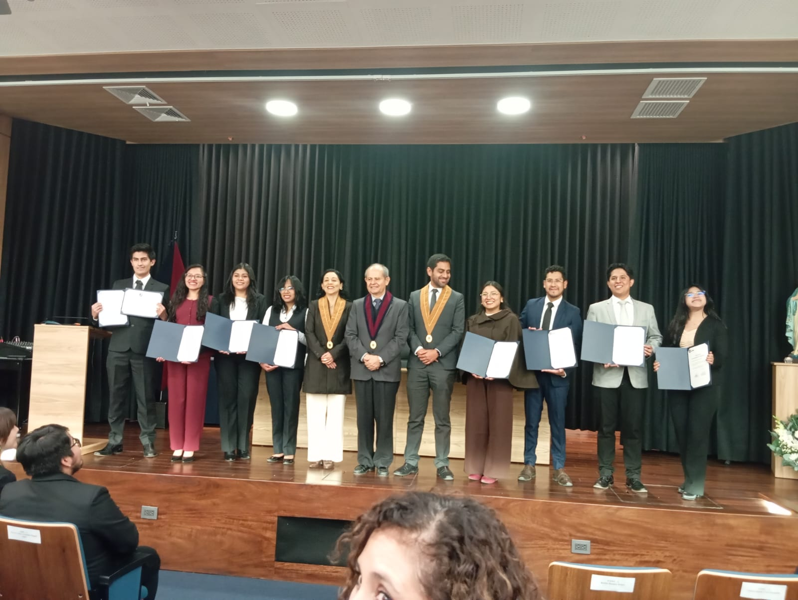
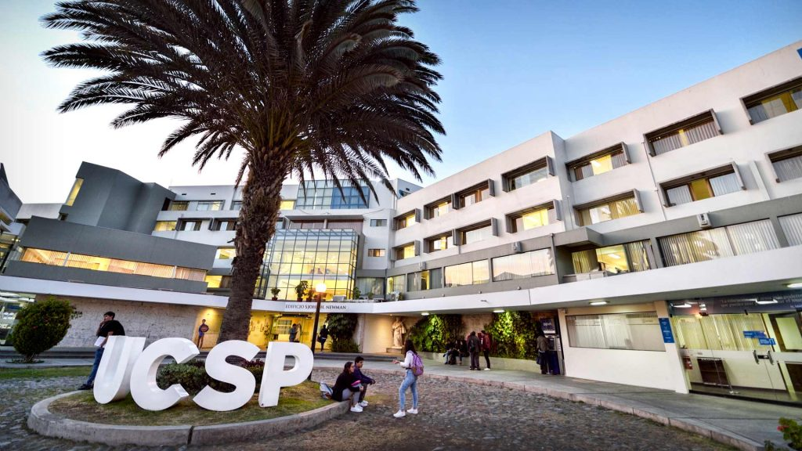
Me proyecto consolidándome como una excelente profesional y llevando la empresa de mis padres a escalas mayores mediante una gestión ordenada y sostenible. Busco seguir fortaleciendo mi autonomía, asumir retos que impulsen mi crecimiento continuo y explorar nuevas oportunidades y destinos en el camino, conservando siempre un espacio de equilibrio y serenidad personal.
LinkedIn: linkedin.com/in/luz-gabriela-mamani-ramos-791277436
Correo electrónico: luz.mamani.ramos@ucsp.edu.pe
GitHub: github.com/luzgabriela1889